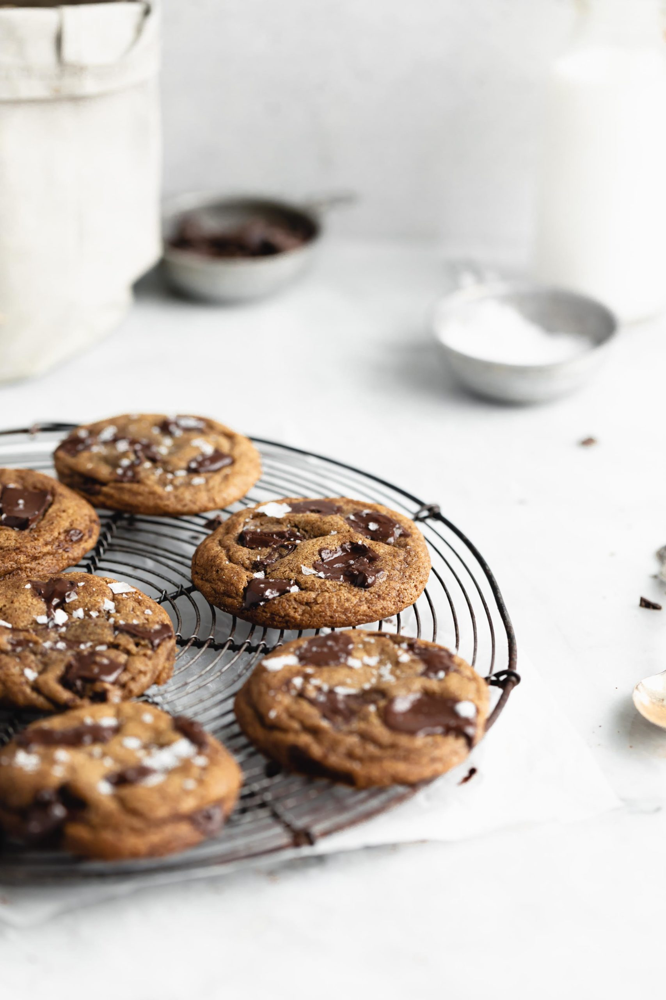

Browned butter espresso chocolate chip cookies

Rich in espresso taste with a little bit of nutty flavor from the browned butter.
These cookies are sure to make any mouth water.
Ingredients:
- 3/4 cup unsalted butter browned and cooled
- 1 cup dark brown sugar, packed
- 1/3 cup white sugar
- 1 egg and 1 yolk at room temperature
- 2 teaspoons of vanilla extract
- 1/2 teaspon salt, plus flaky salt to spinkle on top
- 1/4 cup espresso powder
- 1/2 teaspoon baking powder
- 4oz dark chocolate (either roughly chopped or as chocolate chips)
Instructions:
- Brown butter over medium heat until the butter turns golden brown and foam. Set aside to cool
- In another bowl, combine the cooled browned butter, brown sugar, and white sugar.
Mix until incorporated then add the egg, egg yolk, and vanilla extract. Mix well.
- In a separate bowl, mix together the flour, espresso powder, and basking soda.
Mix the dry ingredients into the wet ingredients until incorporated. Fold in chocolate chips.
- Scoop until 1 ounce balls and place onto baking sheet lined with parchment paper.
Bake at 350F for about 11 minutes or until the edges are golden brown but the insides are still gooey